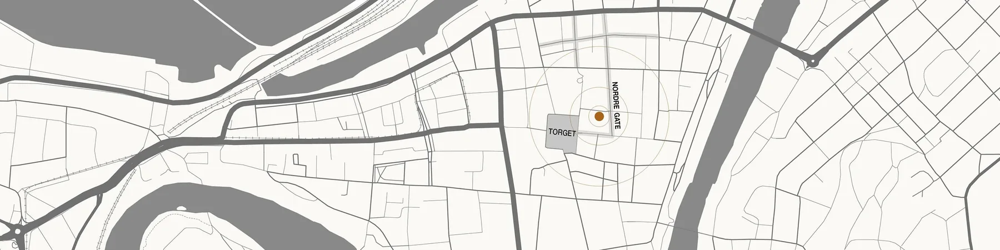
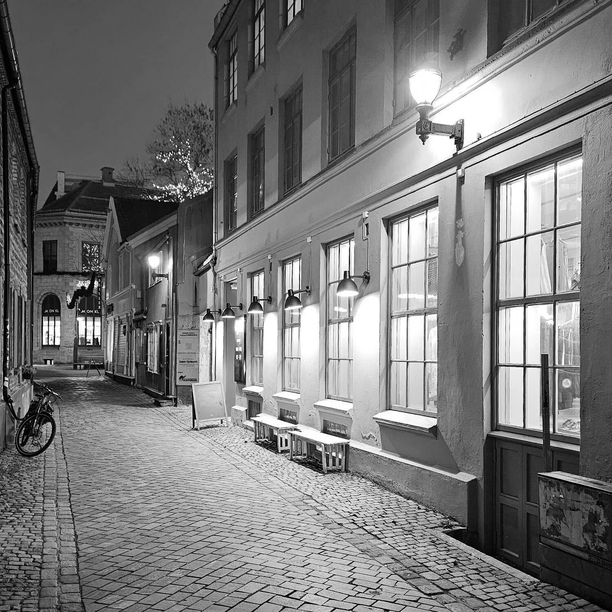
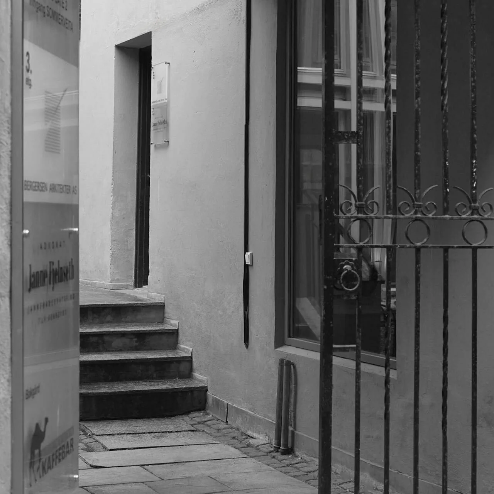

Kontakt
Den første
samtalen.
Et nytt bygg, et rom som skal forandres eller en idé du vil undersøke. Vi hører gjerne fra deg.
Telefon
73 80 58 30Besøksadresse
Nordre gate 2, 7011 Trondheim
Inngang fra Sommerveita. Gå inn portrommet, opp trappen og første dør til høyre. Kontoret ligger i 3. etasje.
Åpne veibeskrivelsePostadresse
Postboks 2682
7415 Trondheim


Forstørr

Forstørr

Forstørr